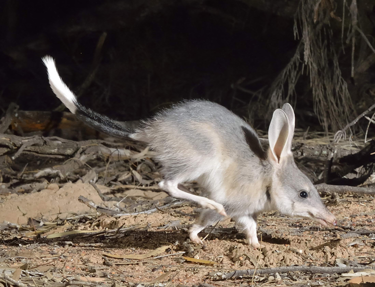

- Bilby is a medium-sized marsupial with blue-grey fur and a long black tail with a white tip
- Bilbies are nocturnal, emerging at night to feed and mate.
- Bilbies contribute to Australia's hot and dry environment by aerating the soil with their digging allowing vegetation to drop into their burrow and decompose.
- Bilbies receive their hydration from their food allowing them to survive in the desert climate.
- Beardies are omnivores, eating more live prey when younger and gradually becoming vegetarian as they age.